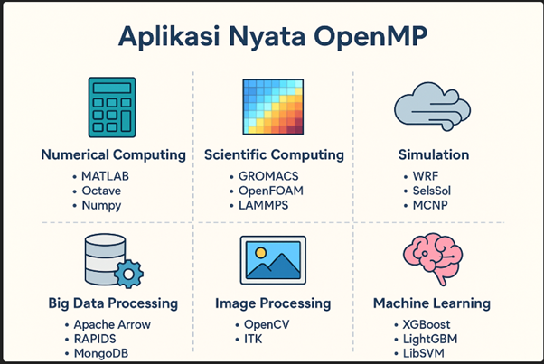

Tentang OpenMP dan Implementasi
Definisi OpenMP
OpenMP adalah sebuah API yang mendukung pemrograman paralel berbasis shared-memory pada bahasa C/C++ dan Fortran. OpenMP adalah akronim untuk Open Multi-Processing. Merupakan Antarmuka Pemrograman Aplikasi (API) berbasis arahan untuk mengembangkan program paralel pada arsitektur memori bersama. Standar OpenMP dikelola oleh OpenMP ARB, sebuah perusahaan yang dewan direksinya terdiri dari perwakilan dari berbagai vendor perangkat keras dan perangkat lunak komputer terkemuka.
Link Referensi
Kapan Menggunakan OpenMP?
• CPU multi-core.
• Program yang bisa diparalelisasi dengan loop-level parallelism atau task parallelism.
• Aplikasi numerik, scientific computing, simulasi, pemrosesan data besar.
• Program yang bisa diparalelisasi dengan loop-level parallelism atau task parallelism.
• Aplikasi numerik, scientific computing, simulasi, pemrosesan data besar.
Aplikasi OpenMP dalam Berbagai Bidang
• Aplikasi numerik dan komputasi ilmiah
• Simulasi kompleks dan modeling
• Pemrosesan data besar (Big Data)
• Machine Learning dan AI
• Pengolahan citra dan video

OpenMP API
Application Programming Interface untuk pemrograman paralel berbasis shared-memory pada C/C++ dan Fortran
Cara Kerja OpenMP
OpenMP bekerja dengan 3 konsep utama:
Link Referensi
1️⃣ Compiler Directives
Menggunakan perintah #pragma omp untuk memberi tahu compiler agar menjalankan bagian kode secara paralel.
Menggunakan perintah #pragma omp untuk memberi tahu compiler agar menjalankan bagian kode secara paralel.
2️⃣ Library Routines
Fungsi OpenMP seperti omp_get_thread_num() untuk mengatur dan mengetahui informasi thread.
Fungsi OpenMP seperti omp_get_thread_num() untuk mengatur dan mengetahui informasi thread.
3️⃣ Environment Variables
Misal: OMP_NUM_THREADS=4 untuk menentukan jumlah thread.
Misal: OMP_NUM_THREADS=4 untuk menentukan jumlah thread.
Konsep Dasar OpenMP yang Diterapkan
a. Loop Parallelism
Membagi iterasi loop menjadi beberapa bagian yang dieksekusi secara bersamaan oleh thread yang berbeda untuk meningkatkan performa komputasi pada sistem multicore.
Membagi iterasi loop menjadi beberapa bagian yang dieksekusi secara bersamaan oleh thread yang berbeda untuk meningkatkan performa komputasi pada sistem multicore.
#pragma omp parallel for
for(int i = 0; i < n; i++) {
// kode paralel
}
Link Referensi
for(int i = 0; i < n; i++) {
// kode paralel
}
b. Reduction
Operasi reduction menggabungkan hasil komputasi dari setiap thread secara otomatis dengan operator tertentu (seperti +, *, max, dll.) tanpa memerlukan mekanisme sinkronisasi manual.
Operasi reduction menggabungkan hasil komputasi dari setiap thread secara otomatis dengan operator tertentu (seperti +, *, max, dll.) tanpa memerlukan mekanisme sinkronisasi manual.
#pragma omp parallel for reduction(+:sum)
for(int i = 0; i < n; i++) {
sum += data[i];
}
Link Referensi
for(int i = 0; i < n; i++) {
sum += data[i];
}
c. Memory Model OpenMP
• Shared Memory: Variabel yang dideklarasikan di luar parallel region secara default dapat diakses oleh semua thread.
• Private Memory: Variabel yang dideklarasikan di dalam parallel region atau ditentukan dengan klausa private akan memiliki salinan tersendiri untuk setiap thread
OpenMP menggunakan model memori bersama (shared memory).
Link Referensi
• Shared Memory: Variabel yang dideklarasikan di luar parallel region secara default dapat diakses oleh semua thread.
• Private Memory: Variabel yang dideklarasikan di dalam parallel region atau ditentukan dengan klausa private akan memiliki salinan tersendiri untuk setiap thread
OpenMP menggunakan model memori bersama (shared memory).
d. False Sharing & Cara Menghindarinya
False sharing terjadi ketika thread-thread yang berbeda mengakses variabel yang berbeda tetapi berada dalam cache line yang sama, menyebabkan penurunan kinerja.
Cara menghindari:
• Menggunakan padding pada struktur data.
• Menggunakan local variable dalam thread sebelum menggabungkannya.
• Mengatur alignment data.
Link Referensi
False sharing terjadi ketika thread-thread yang berbeda mengakses variabel yang berbeda tetapi berada dalam cache line yang sama, menyebabkan penurunan kinerja.
Cara menghindari:
• Menggunakan padding pada struktur data.
• Menggunakan local variable dalam thread sebelum menggabungkannya.
• Mengatur alignment data.
Kesimpulan Implementasi
• OpenMP reduction efektif untuk operasi penjumlahan paralel pada data besar.
• Speedup tidak selalu linier karena overhead paralelisasi dan isu false sharing.
• Pengaturan jumlah thread optimal perlu disesuaikan dengan arsitektur prosesor.
• Speedup tidak selalu linier karena overhead paralelisasi dan isu false sharing.
• Pengaturan jumlah thread optimal perlu disesuaikan dengan arsitektur prosesor.
Fitur Visualisasi
Visualisasi Langkah-demi-Langkah
Lihat bagaimana data dibagi ke thread yang berbeda dan diproses secara paralel.
Benchmark Dinamis
Uji performa dengan berbagai jumlah thread dan ukuran data untuk melihat speedup aktual.
Penjelasan Kode Lengkap
Pelajari implementasi OpenMP dengan penjelasan mendetail untuk setiap bagian kode.
Analisis dan Grafik
Lihat visualisasi grafik speedup dan analisis berdasarkan Amdahl's Law.